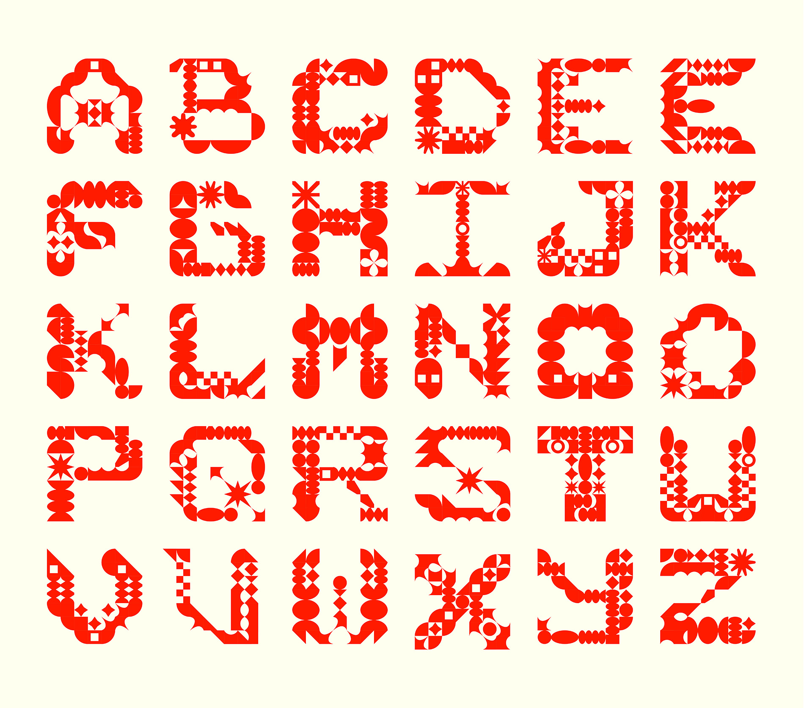
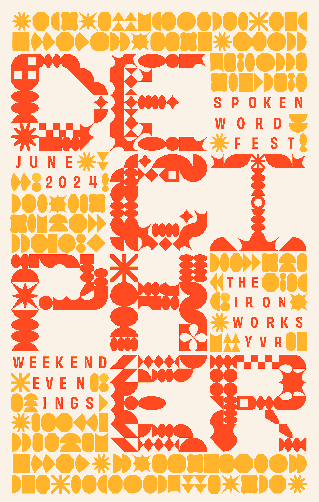

A highly customizable portfolio starter template with a big hero for your branding and intro. The work page is based on CSS Grid. The project page has a sticky sidebar. Beginngers can add their own logo, custom typography, custom colours, custom hover states, custom cursor, and more.
Customize the hero and footer. Make something randomly fly across the screen! Experiment with animated gradients, animated GIFs, and animated SVGs! Add your own typewriter effect, parallax effect or custom effects and easter eggs! Consider adding a Play page or resume. Don't forget to customize your 404 Error Page and optimize your page titles and descriptions for SEO!
© 2025-2026. Hand crafted with ❤ + Flexbox + CSS Grid by James Neufeld.